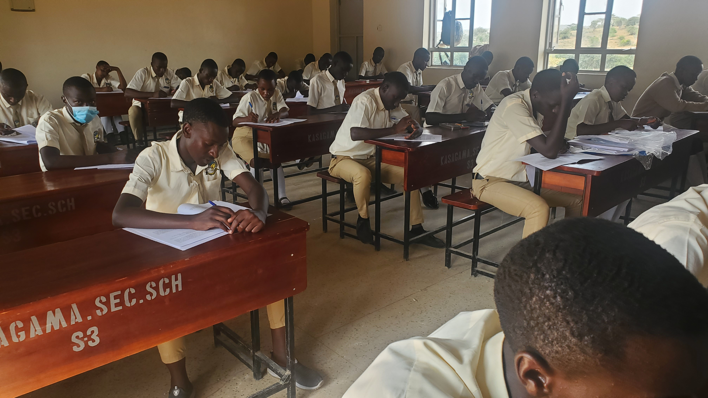
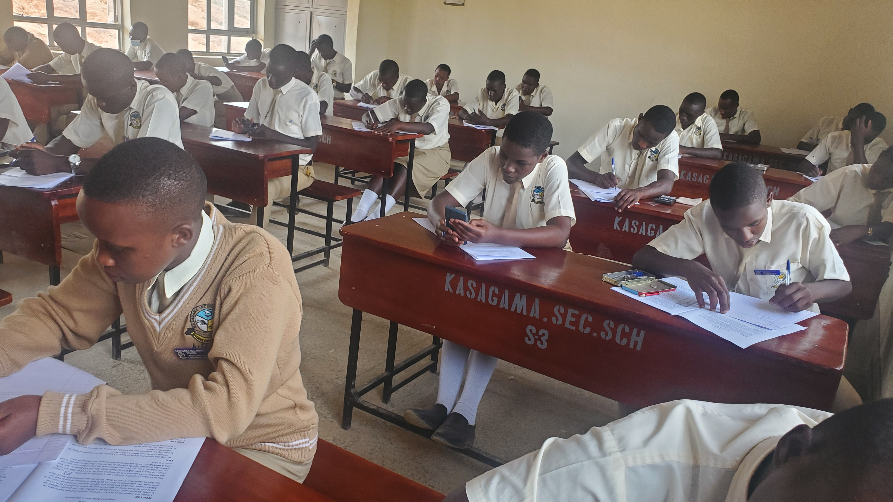
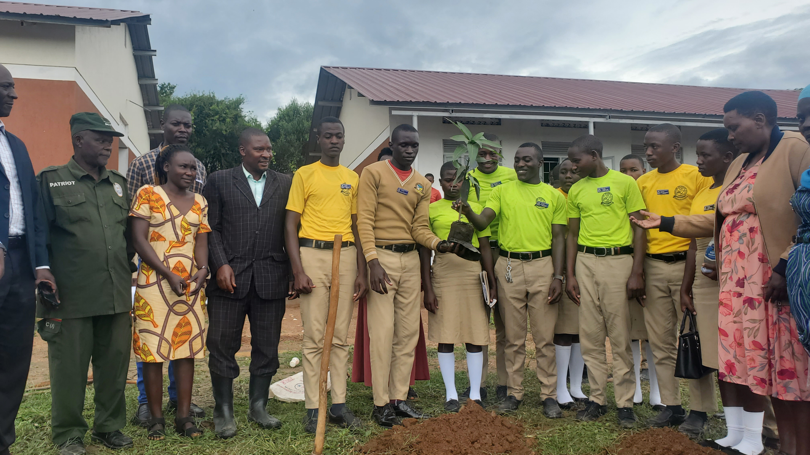
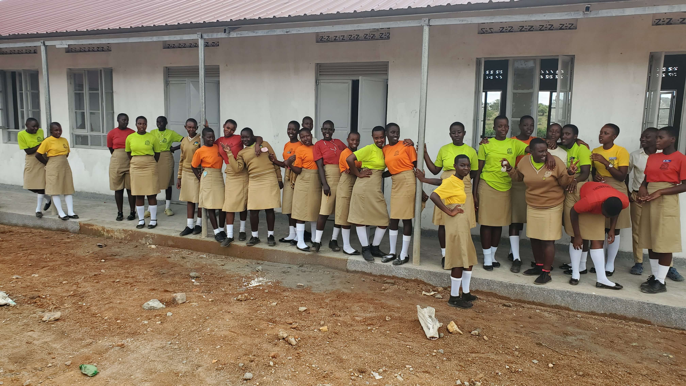
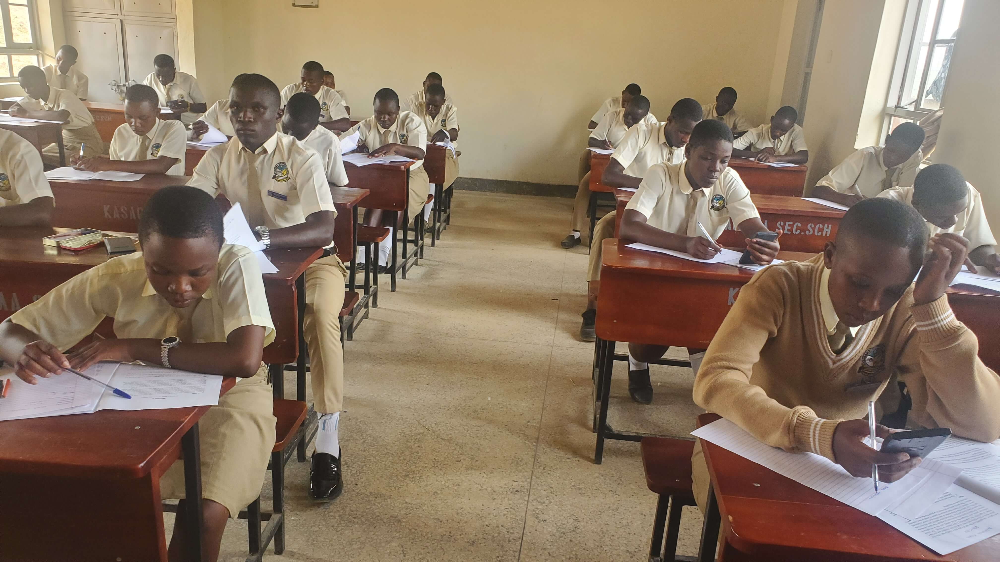
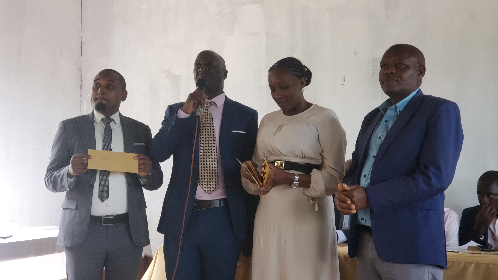
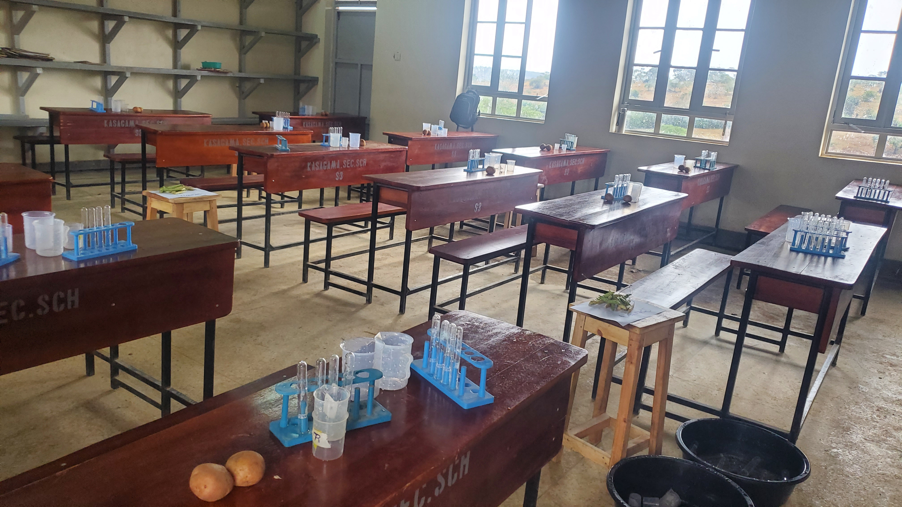
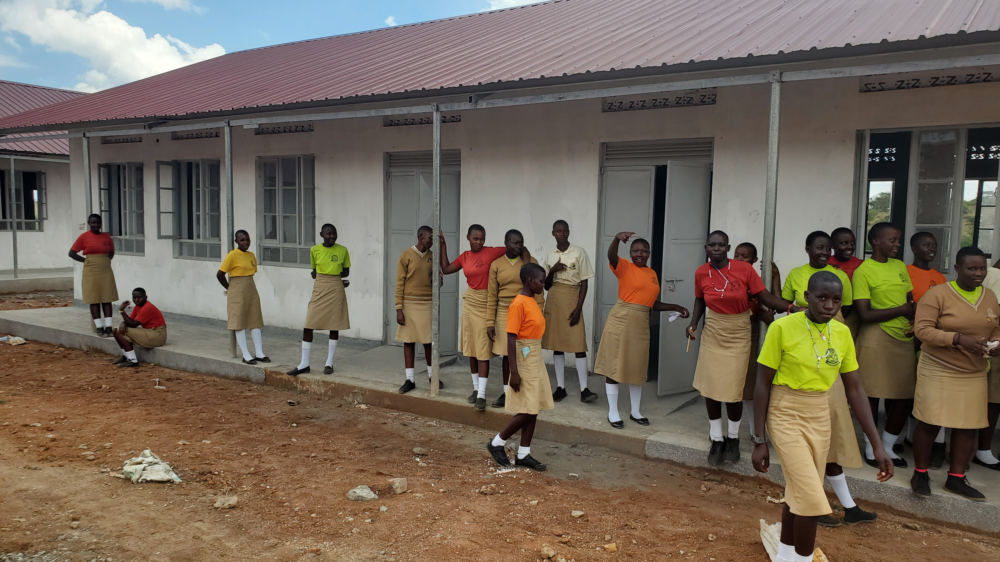
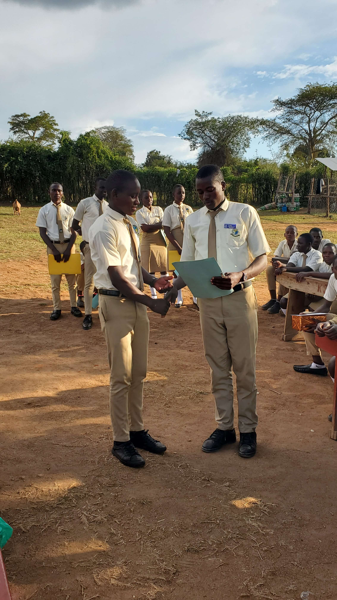
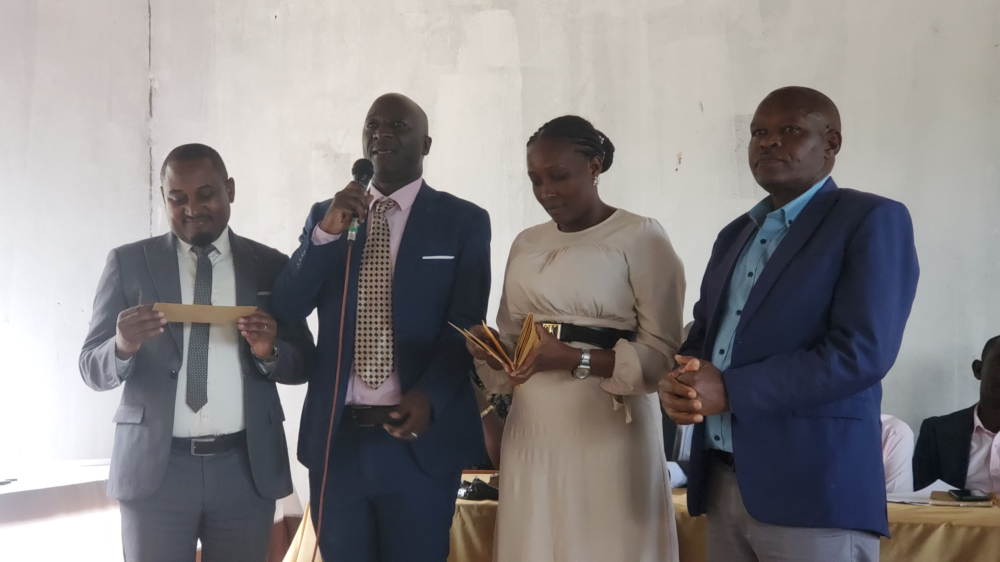

Arts & Humanities
English • Kiswahili • Runyankore-Rukiga • Geography • History • CRE • IRE • Literature in English
A Day and Boarding Secondary School, nurturing responsible and self-reliant citizens.




Kasagama Secondary School began in 2003 as a community school. Parents contribution was responsible for setting up and maintaining infrastructure, procuring supplies and paying staff salaries. The enrollment was indeed very low, at times below 100 students.
Between 2015 -2016, the Government of Uganda, in consultation with the community and the Anglican Church of Uganda, initiated plans to takeover the school. In 2017, the school was officially acquired by Government and became Government Aided.
The takeover by Government came along with the construction of a new campus on a site generously provided by the Kasagama Archdeaconry of the West Buganda Diocese. By August 2026, construction was done and the new campus handed over to the school, complete with furnished Offices, classrooms, kitchen, library, laboratories, staff quarters, and a football field.
The school is governed by the West Buganda Diocese of the Anglican Church of Uganda.

Dear All,
I welcome you to Kasagama Secondary School website. We are an Anglican founded,
government aided day and boarding secondary school. Our staff is comitted to nurturing students into
responsible and self-reliant citizens.
Guided by our school motto, Education for Prosperity, we strive to provide quality, affordable education that equips learners with knowledge and skills, turning them into productive members of society.

We offer both O & A Levels and follow the New Lower Secondary and New A’Level curricula. O level students in S3 & S4 offer the compulsory 7 subjects (English, Mathematics, Biology, Chemistry, Physics, Geography & History) and choose two optional subjects from Local Languages (Luganda, Runyankore-Rukiga), Foreign Languages (Kiswahili), Humanities (CRE, English Literature), and Business/Vocational (Agriculture, Entrepreneurship Educ, ICT, Art & Design).
S1 - S2 students offer 14 subjects including the 7 Complusory UNEB subjects, Kiswahili (compulsory), either Art & Design or Agriculture, and the rest of the subjects offered in S3 and S4.

English • Kiswahili • Runyankore-Rukiga • Geography • History • CRE • IRE • Literature in English
Mathematics • Physics • Chemistry • Biology • Agriculture

Entrepreneurship Education • Art & Design • ICT
class FutureLearner:
def learn(self):
skills = [
"ICT",
"Coding",
"Problem Solving",
"Creativity"
]
return skillsWe boast of arguably the best computer laboratory in Lyantonde district. Teaching has been integrated with ICT. Projectors and Smart Tv Screens are used by teachers to deliver lessons.
Plans are under way to install WiFi internet. This will improve research, communication, and entertainment for staff and students.
Our ICT and computing programme introduces learners to computer use, the Microsoft Office suite (Office Word, Excel, PowerPoint, Access, & Publisher), coding and practical software development.
Every single minute of our students' stay is accounted for. Our school program strikes a balance between academics, co-curricular, entertainment, worship, and rest. A copy of the School program can be downloaded from here or from the official downloads section.
We encourage students to have a life outside the classroom. The school has put in place facilities and sports equipment to facilitate games and sports. Students actively engage in field sport such as football, netball, volleyball, and athletics. Plans to establish a Basketball Court are in progress.
Students are encouraged to subscribe to school clubs and associations. Each club is has a patron who oversees their activites on behalf of the school administration.
Clubs at Kasagama include Debating, Scouts & Guides, Scripture Union, Patriotism, Interact, Writers among others. Clubs give a sense of belonging and purpose to students.

We admit students into S1–S3 and S5. The child's parent/guardian comes to school along with the child, and presents admission requirements for the particular class.
On fulfillment of the admission requirements, the parent is issued an admission letter. The child is issued School rules and regulations which they read through and sign on. This marks the end of the admission process.
A copy of the School Rules & Regulations and the previous term Circular can always be downloaded from here.
Admissions are handled by the Headteacher and Deputy Headteacher.

The school administration is headed by Mr. Ssenfuma Herbert Mitti (Headteacher), assisted by the Ms. Nakazzi Manjeri, the Deputy Headteacher. The academic department is overseen by the Deputy Academics who works alongside the Director of Studies (DOS) and the Assistant Director of Studies.
The above team is assisted by the Support Staff, Classteachers, Heads of Departments, and Students Leadership in the running of the school.
Kasagama Secondary School
Kasagama Sub-County, Lyantonde District, Uganda